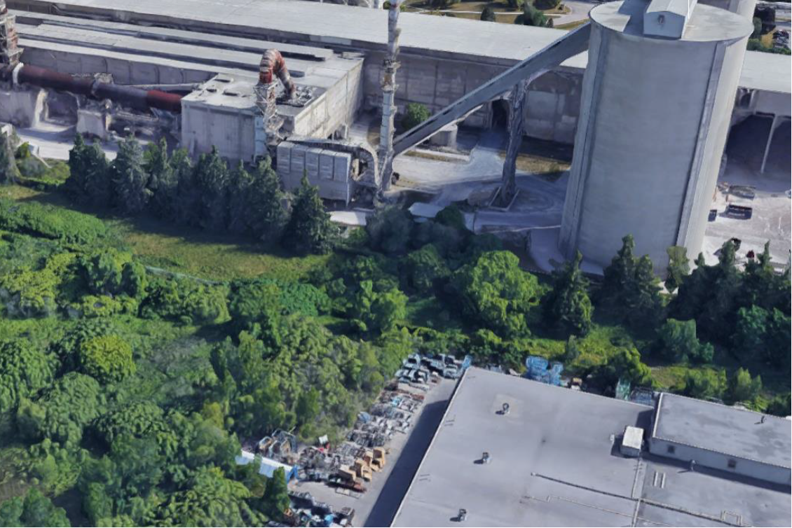

    
        
                
                <blockquote>"The group used two
                <figure>
                <figure>
                <figure>
            </div>
            </div>  
            <div class ="col-sm-4">
            <div class ="col-sm-4">
            <div class ="col-sm-6">
            <div class="row vertical-align">    
            <figure>
        </div>
        </div>  
        <div style="margin-bottom:1%"><a class="greyfnt lato fsze" href="https://www.linkedin.com/in/andy-poon" target="blank"><i class="fa fa-linkedin fa-lg" aria-hidden="true"></i> LinkedIn</a></div>
        <div><a class="greyfnt lato fsze" href="https://codepen.io/anpoon430/" target="blank"><i class="fa fa-codepen fa-lg" aria-hidden="true"></i> Codepen</a></div>
        <h3 class="whitefnt">About this page</h3>
        <h3 class="whitefnt">Social</h3>
        <p class="greyfnt fsze">Made with by Andy Poon</p>
      <meta name="viewport" content="width=device-width, initial-scale=1">
      <script src="https://ajax.googleapis.com/ajax/libs/jquery/3.2.1/jquery.min.js"></script>
    </div>
    <div class="col-xs-0 col-sm-2"></div>
    <div class="col-xs-0 col-sm-2"></div>
    <div class="col-xs-6 col-sm-4 text-center">
    <div class="col-xs-6 col-sm-4 text-center"> 
    <link href="https://fonts.googleapis.com/css?family=Lato" rel="stylesheet">
    <link rel="stylesheet" href="https://cdnjs.cloudflare.com/ajax/libs/font-awesome/4.7.0/css/font-awesome.min.css">
    <link rel="stylesheet" href="https://maxcdn.bootstrapcdn.com/bootstrap/3.3.7/css/bootstrap.min.css">
    <link rel="stylesheet" href="styles/styles.css">
    <p class="whitefnt text-center lato">© Andy Poon</p>
    <title>Andy Poon</title>
     <script src="https://maxcdn.bootstrapcdn.com/bootstrap/3.3.7/js/bootstrap.min.js"></script>
  
        </span>
    
            
                    
                    <figure>
                     <div class="caption text-center fsze center-block">Site layout and cut and fill calculated using Civil 3D</div>
                     <div class="caption text-center fsze center-block">Week 1</div>
                     <div class="caption text-center fsze center-block">Week 2</div>
                     <div class="caption text-center fsze center-block">Week 3</div>
                     <div class="caption text-center fsze center-block">Week 4</div>
                     <div class="caption text-center fsze center-block">Week 5</div>
                     <div class="caption text-center fsze center-block">Week 6</div>
                     <div class="caption text-center fsze center-block">Hyperloop poster (made by Akash Elango, Andy Poon, Jonathan Lopez, Bruce Li)</div>
                     <div class="caption text-center fsze">Bus bunching at Dufferin Station</div></figure>
                </div>
                </div>
                </figure>
                </figure>
                </figure>
                </figure>
                </figure>
                </figure>
                </figure>
                </figure>
                </figure>   
                <blockquote>Final Recommendation:"After careful analysis and
                <div class ="col-sm-4">
                <div class="col-sm-4" >
                <div class="col-sm-8">
                <div class="row vertical-align">
                <figure>
                <figure>
                <figure>
                <figure>
                 <div class="caption text-center fsze center-block">Project Cost distribution</div>
            </div>
            </div>
            </div>
            </div>
            </div>
            </div>
            </div>
            </div>
            <div class ="col-sm-4">
            <div class ="col-sm-6">
            <div class ="col-sm-8">
            <div class="row vertical-align">    
            <div class="row vertical-align">    
            <figure>
        <button type="button" class="navbar-toggle" data-toggle="collapse" data-target="#myNavbar">
        <h1>Portfolio</h1>
        <h3><strong>Civil Engineering Coursework</strong></h3>
        <h4><strong>Dufferin Bus route performance Project</strong></h4>
        ANDY POON
        </button>
        <span class="navbar-text fsze">
                     <div class="caption text-center fsze center-block">CRH Mississauga Cement Plant</div>
                </figure>
                <figure>
        <span class="icon-bar"></span>
        <span class="icon-bar"></span>
        <span class="icon-bar"></span> 
      </div>
      <li class="active"><a href="portfolio">PORTFOLIO</a></li>
      <li><a href="/">ABOUT</a></li>
      <li><a href="contact">CONTACT</a></li>
    </div>
    </div>
    </div>
    </div>
    </ul>
    <div class="col-sm-2 "></div>
    <div class="col-sm-2 "></div></div>
    <div class="col-sm-2">
    <div class="col-sm-2"> 
    <div class="col-sm-8 ">
    <div class="col-sm-8 panel"> 
    <div class="collapse navbar-collapse" id="myNavbar">
    <div class="navbar-header">
    <embed class="center-block" alt="AF for cement production preview" src="https://docs.google.com/viewer?url=images/capstone.pdf&embedded=true">
    <ul class="nav navbar-nav  pull-right">
  </div>
  </div>
  <div class="row contentmargin">
  <div class="row">
<!DOCTYPE html>
</body>
</div>
</div>
</div>
</div>
</div>
</div>
</head>
</html>
</nav>
</object>
<body class="bkgd" >
<div class="bkgd3 container-custom2 row">
<div class="col-sm-6">
<div class="col-sm-6">
<div class="container-fluid">
<div class="row bkgd2 container-custom1">
<div class="row">
<h4><strong>Capstone Project: Business case for CRH Canada on Alternative fuel for Cement Production</strong></h4>
<h4><strong>Construction Engineering Earthworks project</strong></h4>
<h4><strong>Construction Management Project: Union Station Platform Construction</strong></h4>
<h4><strong>Professional poster on the Hyperloop transit concept</strong></h4>
<head>
<html>
<nav class="navbar navbar-inverse navbar-static-top navbar-fixed-top"> <!--static top solves bar overlapping content at small screen sizes-->
<object width="400" height="260" data="images/capstone.pdf" type="application/pdf">
inconsistent head way and crowding."</blockquote>
issue based on research."</blockquote>
methods of data collection for analysis purposes: on-site data collection and online database
payment, all-door boarding, prediction algorithm and bus lane that will effectively mitigate the
review of different case studies, the group decided to utilize a combined system of PoP
searching. The team determined that the main problems on Dufferin are bus bunching,